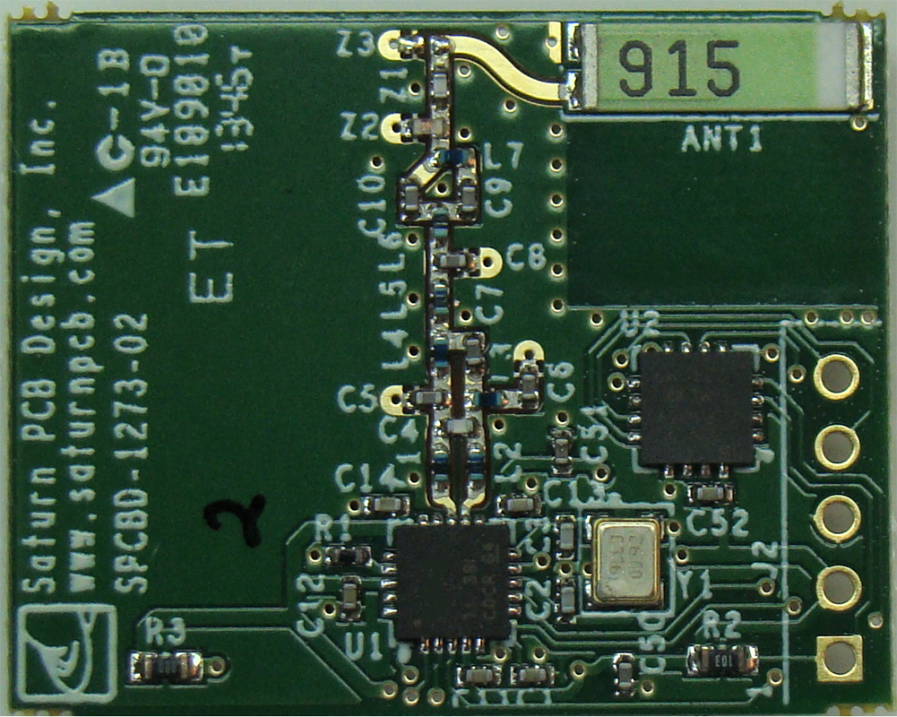

|
Collection of data |
|
SensorsFirst is the main way to collect data is using sensors. There are a lot of different types of sensors that were installed in IoT devices, for example:
These sensors are measuring different aspects in the physical world, and each sensor is connected with gateways so that they can relay the collected data of a server in the cloud. AntennaAntenna will affect a devices’ in terms of communication range, overall power consumption, and battery life. And a suitable antenna should also have high efficiency and adequate bandwidth covering the desired frequency range. There are 3 different types of antennas:
Normally will use a PCB antenna as it can be attached to the main circuit board featuring an inverted-F, L-shaped, or meandered antenna pattern, they are reliable, easy to use, and adjustment-free. |
 |

|
MicrocontrollerMicrocontrollers are tiny, self-contained computers hosted on a microchip. As mentioned above sensors will have a gateway to connect to the servers but gateways lack data logic control capabilities. The microcontrollers with embedded intelligence could work as an intermediate device to help the interconnections of the endpoint devices so that intelligence services could be provided to the end-users. It is like a microprocessor but it does not equal to a microprocessor. As a microcontroller has the CPU, RAM, ROM, and peripherals all embedded onto a single chip. So it is basically a computer. |